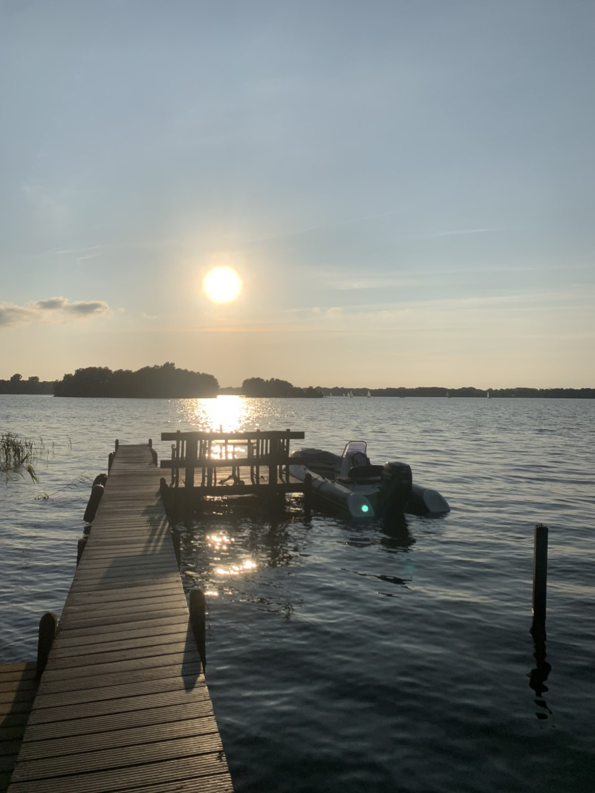

Op deze pagina ga ik over mijzelf vertellen.
Mijn naam is Jurre van der Werff ik ben 15 jaar oud
Hier ga ik kort vertellen over mijn hobby's die ik uitoefen
Anderhalf jaar geleden ben ik gestart met golf lessen om het spel te leren,
Pas sinds kort speel ik weer, omdat ik door corona was gestopt met spelen.
Het leuke aan golf vind ik dat het een rustgevend spel is wat soms erg goed gaat en soms totaal niet wil.
Elke week sta ik gemiddeld 3 keer op de drivingrange om mijn swing te oefenen en te verbeteren.
Binnenkort ga ik ook voor mijn GVB slaan dat is golfbewijs voor de golfbaan wat je toegang geeft tot elke golfbaan.
Voorheen golfde ik nog wel met mijn moeder want die was lid op een golfbaan.
Tijdens de zomer maanden zit ik graag aan en op het water bij het paterswoldsemeer.
Dit komt omdat ik hier eigenlijk ben opgregroeid vanaf toen ik een baby was omdat mijn familie daar een vakantiehuisje heeft.
Sinds deze zomer zeil ik ook zelf op het paterswoldsemeer bij de zeilvereniging aan het meer, en zeil ik nu al een maand elke donderdag mee.
het leuke aan het water vind ik dat het nooit verveelt en het rustgevend is en elke dag op het water is anders.
Soms windsurf ik in de zomer vanaf mijn steiger het meer rond, om het surfen een beetje te leren.
Sinds deze zomer heb ik bij mij aan het water een nieuwe boot, die heeft mijn vader voor mij en mijn familie gekocht.
Ik heb de boot voor het eindexamen uitgezocht en op de dag van mijn laatste examen met mijn vader opgehaald uit zeeland.
